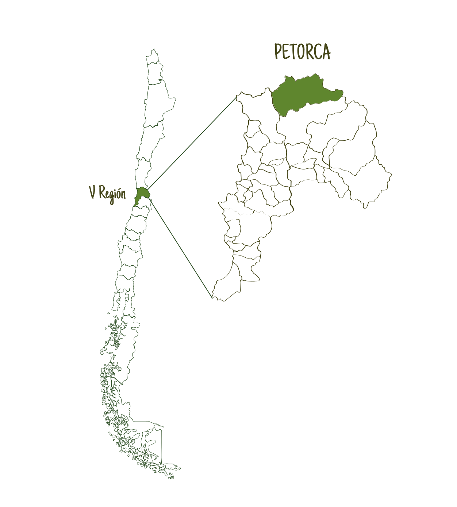
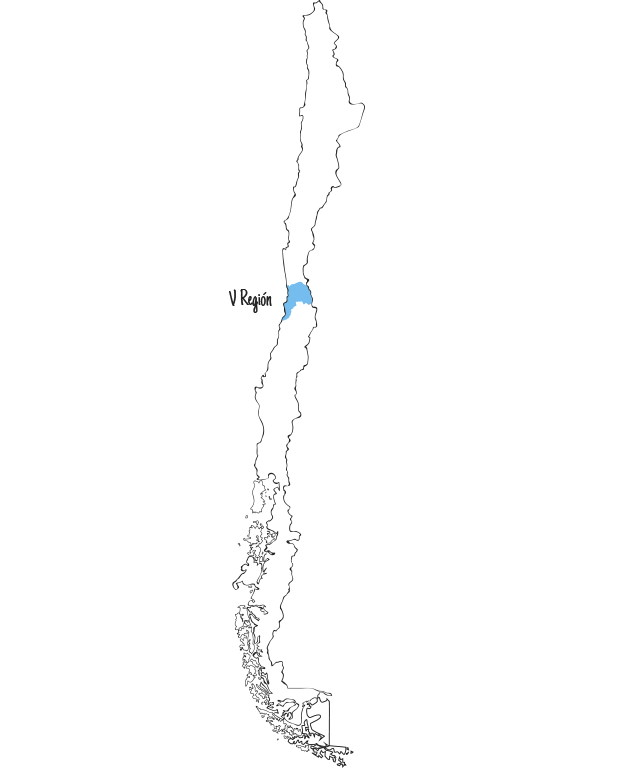
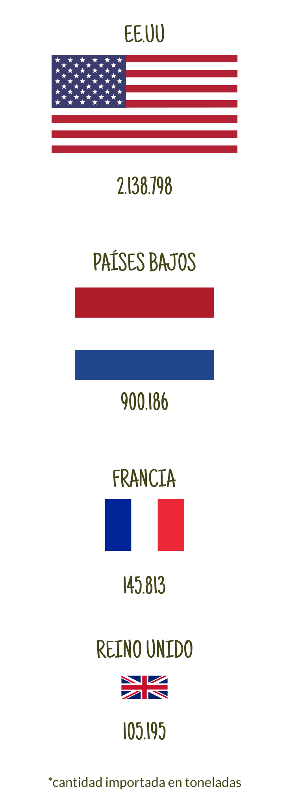
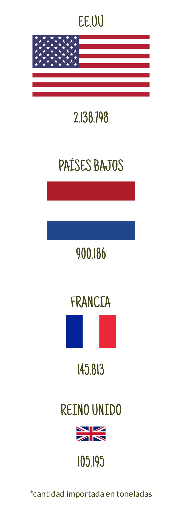
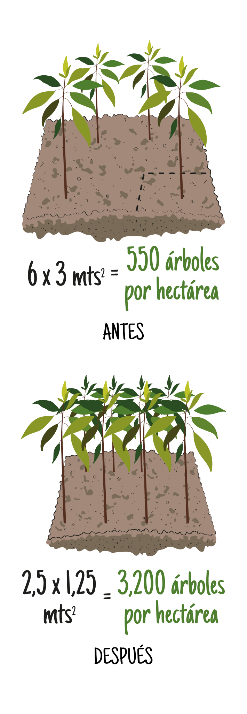

Dónde es: Región de Valparaiso
Habitantes: 70.610
Producción agrícola: Paltas y limones
Contexto: napas subterráneas y rios secos
La provincia de Petorca tiene una superficie de 4.589 kilómetros cuadrados, se ubica en el extremo noreste de la Región de Valparaíso y su población es de 70.610 habitantes. La principal actividad económica es la agricultura, la que se desarrolla en torno a los valles de los ríos de Petorca y La Ligua, produciendo esencialmente paltos y limones.
El río Petorca ha sufrido enormes presiones y las napas subterráneas se encuentran agotadas. Por esta razón grupos ambientalistas se han unido para defender el sector y sus habitantes de las empresas que han construido drenes de agua para mover aguas a sus plantaciones agrícolas.
UN ANTES Y UN DESPUÉS PARA PETORCA

10 de septiembre de 2018
12 de septiembre de 2019
Una combinación de fotos que muestran al río La Ligua, en la provincia de Petorca, Chile.
©AFP STR, MARTIN BERNETTI.
EL CÓDIGO DE AGUAS DE CHILE
¿CÓMO SE DISTRIBUYE EL AGUA EN PETORCA?

Para producir un kilo de paltas en Petorca se requieren 1280 litros de agua, esuivalentes a 5120 vasos.
La gente en Petorca tiene a su disposición 50 litros totales por persona de agua diarios, es decir, 200 vasos, para consumo, higiene y demases.

Es decir, por cada 25,6 vasos de agua destinados a la palta, 1 es destinado a consumo humano
¿QUÉ TIPOS DE PALTA SE EXPORTAN?
En Chile, a pesar de haberse catastrado más de 35 variedades de paltas, ocho represen- tan más del 99% de la superficie, cuatro representan más del 97% de la superficie comercial y sólo una, la Hass, representa casi el 90% del total de la superficie nacional.*(Muñoz, M. 2018 "La palta chilena en los mercados internacionales", Oficina de estudios y policías agrarias, Ministerio de Agricultura)
¿A DÓNDE SE EXPORTAN?
 

De los 6,27 miles de millones de dólares que gastaron en 2017 los países en la importación de paltas, Estados Unidos de Norteamérica se hizo cargo del 44% de ese monto, siendo el principal importador de este producto. Europa concentra el 39% de las importaciones totales. Países Bajos aparece como el segundo importador mundial.Francia aparece como el tercer comprador de paltas del mercado mundial, con 7% del volumen y un precio medio pagado de USD 3,06 por kilo CIF. Reino Unido y España ocupan el cuarto y quinto lugar del ranking de los principales importadores de paltas. China se presenta como el gran mercado para la fruta chilena y las paltas no son una excepción. Sin embargo, la palta se diferencia de la mayoría de las frutas porque existe un mercado nacional tan competitivo como el internacional, con un fuerte aumento en el consumo acompañado de una disposición a pagar más por el producto, lo que atrae exportaciones de países vecinos, compitiendo con los otros mercados. Sin embargo, es necesario proyectarse con ciertas reservas a futuro, las que se relaci nan con la capacidad de recursos hídricos del país y, en consecuencia, con la disponibilidad de agua para riego.* (Muñoz, M. 2018 "La palta chilena en los mercados internacionales", Oficina de estudios y policías agrarias, Ministerio de Agricultura)
PALTOS PLANTADOS POR HECTÁREA
